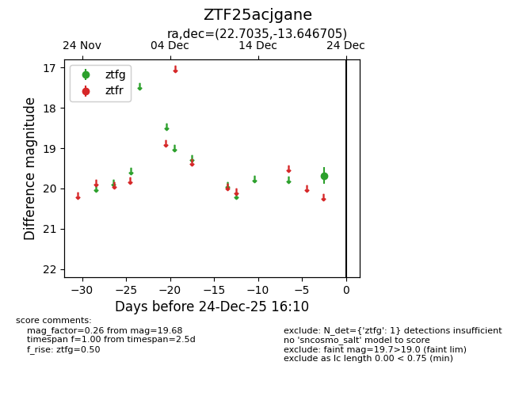
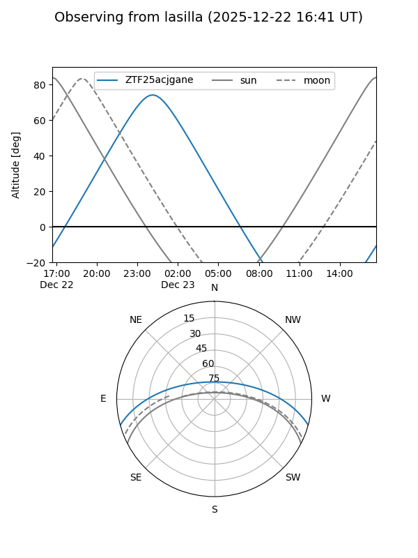
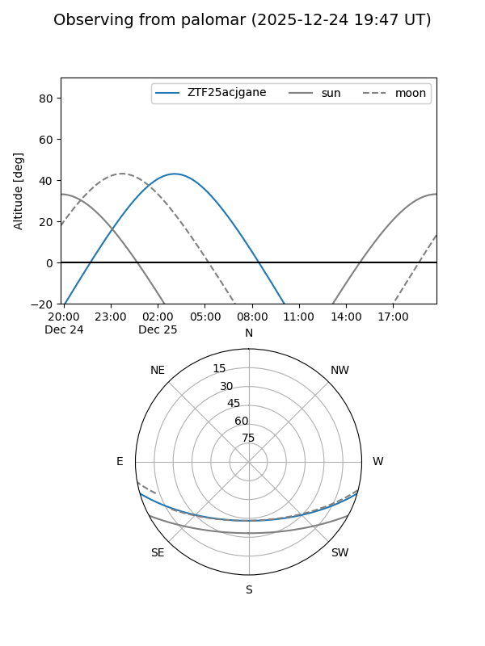

ZTF25acjgane
Target ZTF25acjgane at 2025-12-24 16:17
Aliases and brokers:
FINK: fink-portal.org/ZTF25acjgane
Lasair: lasair-ztf.lsst.ac.uk/objects/ZTF25acjgane
ALeRCE: alerce.online/object/ZTF25acjgane
alt names
ZTF25acjgane (ztf,fink_ztf)
Coordinates:
equatorial (ra, dec) = 22.7035,-13.64670
equatorial (HMS+DMS) = 01:30:48.84,-13:38:48.14
galactic (l, b) = (159.1793,-73.68088)
Flags:
Photometry:
last ztfg=19.68
1 ztfg detections
Lightcurve

Visibility


Additional plots